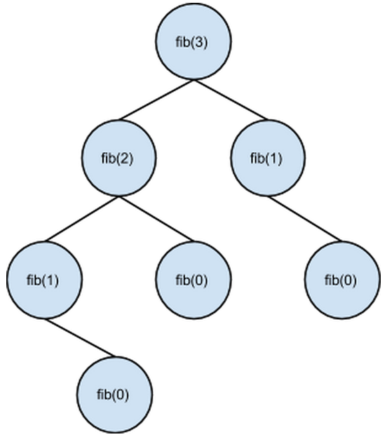

Intuitive Overview
Motivation
Say we have a problem we want to solve. To brute-force the solution, we can break the problem into all possible subproblems, then solve them. This gives us the answer to the original problem.
Unfortunately, we run the risk of creating duplicate subproblems. This is problematic because solving the same subproblem more than once is a waste of time and resources.
To avoid this, we can store answers to subproblems as we solve them. When we encounter a duplicate subproblem, we simply look up the stored answer instead of computing it again. Going one step further, we can purposefully divide the problem to create lots of overlapping (duplicate) subproblems, thus generating computational savings.
This "smarter" variant of brute-force search is called Dynamic Programming (DP).
There are two approaches to DP: tabulation and memoization.
- Tabulation is bottom up. The values of the lowest level subproblems get calculated and stored first. These tabulated values are then iteratively used to answer the next level of subproblems, and so on.
- Memoization is top down. Instead of solving subproblems interatively, memoization solves subproblems recursively. Since higher-level subproblems often make duplicate recursive calls, they can be eliminated.
Example: Fibonacci Numbers
A good example of DP using memoization is the Fibonacci Sequence. Say we have a recursive algorithm Fib(n) that determines the nth Fibonacci number. To calculate the nth Fibonacci number, we have to know the values of the (n-1)st and the (n-2)nd Fibonacci numbers. So we call Fib() two more times, and then continue recursing in those respective calls. In the complete recursion tree for Fib(3), the value of Fib(0) is required three times. Therefore, DP saves us two redundant calls to the algorithm:
Vs. other Algorithms
The mechanics of DP may resemble those of greedy and divide & conquer algorithms. The differences are explained below:
- DP can appear greedy when it is used to solve optimization problems. Much like a greedy algorithm, a DP algorithm will choose the best value at each iteration. A DP algorithm, however, is guaranteed optimality, because every subproblem is calculated from the optimal solution to its subproblem(s). Greedy algorithms give no guarantee of optimality.
- DP and divide and conquer (D&C) both break up problems into subproblems. The difference is that each subproblem in D&C is unique and does not have duplicates. In addition, the subproblems in D&C are basically all the same size; in DP, the subproblems can be of arbitrary sizes.
High-level Implementation
To implement a DP problem, we create a data structure that represents all subproblems (such as a graph or 2-D array). When a call to a subproblem is made, we first check if the spot in the data structure already contains the answer. If not, we calculate the answer and store it there.
Conclusion
We’ve attempted to motivate and illustrate dynamic programming at a high level.
- Here is a more in-depth look.
- This is more on tabulation and memoization.